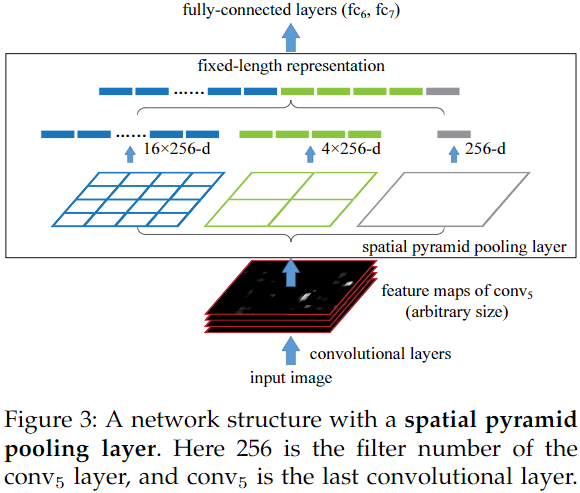
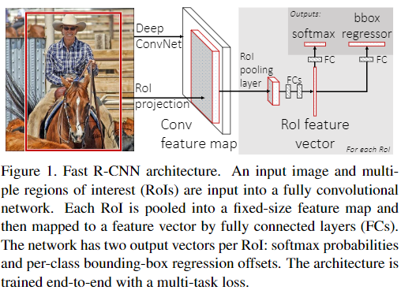
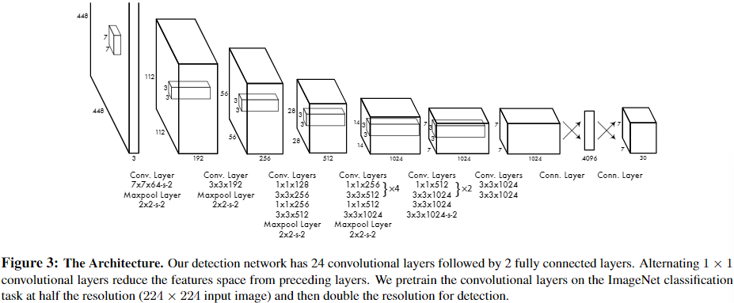
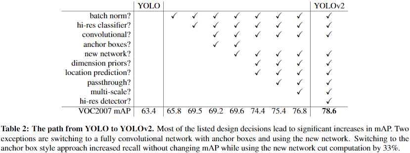
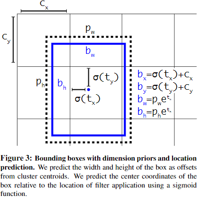
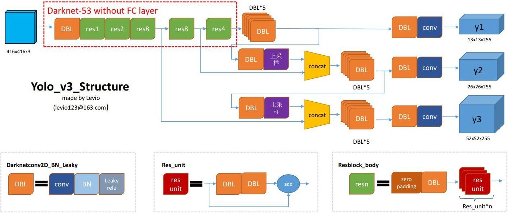
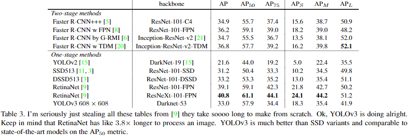

目标检测任务简单来说就是给定一张图片，模型需要根据图片找到感兴趣的目标，将其位置、大小标注出来。
从RCNN到Faster-RCNN
目前的目标检测方法主要分为：两阶段的检测器、单阶段检测器两种，RCNN到Faster RCNN系列检测器是典型的两阶段检测器的代表。
RCNN
论文《Rich feature hierarchies for accurate oject detection and semantic segmentation》中提出了RCNN模型用于目标检测，其基本流程如下：
- 使用Selective Search算法提取出2k个region proposal。
- 对于每个region proposal，先裁剪出对应区域的图片，然后使用AlexNet进行特征提取（特征取最后那个softmax层的输入，是一个4096维的向量）。
- 训练K个线性SVM分类器，对每个region proposal进行K次分类，得到其属于K个类别的得分。
- 对每个类别的proposal进行NMS后处理，得到最终的结果。
这里的Selective Search算法本质上是一种先分割图片然后再尝试各种组合的穷举算法，这里没有详细研究。
整体来说，RCNN的流程非常粗暴，主要有两个阶段：1、获取region proposal，2、对region proposal进行分类，但这也是后面的两阶段检测方法的一般流程。
SPP-net
在RCNN中存在的一个问题是region proposal的大小不相等，但是AlexNet要求固定大小的输入图片，否则特征维度会发生变换（如果现在来看这个问题的话，加个global pooling就OK了，但是当时没想到），因此在RCNN里面只能通过缩放，让region proposal满足输入大小的要求，这样带来了畸变的问题，为了解决这个问题，论文《Spatial Pyramid Pooling in Deep Convolutional Networks for Visual Recognition》提出了空间金字塔池化操作(Spatial Pyramid Pooling，SPP)，而且顺便结局了RCNN中对每个region proposal都提取一次特征带来的重复计算问题。
在SPP-net中，首先将整幅图作为输入（这里使用的模型不再是AlexNet，这里试验了ZF-5、Convnet*-5、Overfeat-5、Overfeat-7这几个模型，我这里不再详细研究），提取出特征图之后，再从特征图上抠出来region proposal对应的区域（这里不同于RCNN对每个region proposal进行一次特征提取，所以解决了重复计算问题），然后将抠出来的区域进行空间金字塔池化操作，使其变成固定大小的特征向量。再使用SVM对特征进行分类。
SPP操作的示意图如下所示，主要思想是将特征图先划分成固定数量的网格，然后再每个格子内进行池化操作，最后将固定大小的池化结果展开、拼接成固定大小的特征向量。

Fast-RCNN
有了SPP-net的思路之后，RCNN也做出了相应的改变，在论文《Fast R-CNN》中，接纳了SPP-net中先全图特征提取再裁剪region proposal区域的方法，然后对SPP-net进行改进：
- 只使用一个固定大小的网格分割，称为ROI Pooling层（并提出了ROI Pooling层的反向传播方法）。（至于为什么要降SPP改成ROI Pooling，可能主要是ROI Pooling有反向传播功能，其实如果SPP也实现了反向传播，那么ROI Pooling不一定比SPP效果好，不知道有没有人进行过对比）
- 特征提取模型换成了VGG。
- 对特征的处理采用神经网络，不再使用SVM，对于分类，使用softmax函数得到类别概率。
- 特征除了用于分类之外，还用于更精确的位置回归（使用smooth L1损失），并且让这两个任务共享一部分全连接层，提出了多任务损失函数的训练方法。
Fast-RCNN的简略流程示意图如下所示：

Faster-RCNN
Fast-RCNN还是没有做到完全的端到端得到输出结果，因为还是要依赖Selective Search算法来生成region proposal。
在论文《Faster R-CNN: Towards Real-Time Object Detection with Region Proposal Networks》中，提出了Faster-RCNN，其中使用一个区域建议网络（Region Proposal Network，RPN）来替代Selective Search算法进行region proposal工作。
RPN的思路应该来源于Fast-RCNN中的位置回归操作，Fast-RCNN中证明神经网络可以用于位置回归问题，因此自然就会有一个想法是使用神经网络来对输出候选位置。但是如果直接回归位置，有两个问题：
- 特征图上某个像素点，应该回归哪个目标的位置（在之前的方法中，位置回归的目标很明确，因为region proposal有了之后，查找数据标签，可以很容易知道对于这个位置应该去回归哪个目标，或者这里面没有目标，那么就不用回归位置）
- 如果是输出像素坐标，那么对于不同大小的图片，不同尺度和比例的目标，回归任务很难收敛。
对于上面两个问题，这里提出了Anchor的机制，首先在图片上按照一定的规律分布好各种尺度和比例的方框（Anchor box，一个像素点可以有多个Anchor box），然后每个像素点（Anchor）输出anchor box的类别（前景还是背景）、缩放和偏移量。
每个anchor box要么匹配一个目标（其分类类别为这个目标的类别且回归目标为这个目标的位置），要么在训练过程中将其分类为背景类，并且不计算其回归输出的loss。
RPN和也是用和RCNN一样的特征提取网络（这个特征提取网络一般称为Backbone）。
为什么要使用Smooth L1作为回归任务的损失函数
在回归损失函数中，最常用的是L2损失函数，$L = (h(x;\theta) - y) ^ 2$，其导数$\frac{\partial L}{\partial \theta} = \frac{\partial h(x;\theta)}{\partial \theta}(h(x;\theta) -y)$，这里的问题在于：如果模型初始化得不好，再训练开始时$h(x;\theta) - y$特别大，则会导致梯度特别大，模型将难以训练。那么一个自然地想法是使用L1损失函数，但是L1损失函数不是处处可导，梯度会发生突变，也不利于训练，因此将L1损失函数进行一些平滑操作，给出了smooth L1损失函数如下所示：
RPN训练时的loss计算需要对负样本进行采样
RPN的训练目标是将Anchor Box进行前景和背景分类，并且对分类为前景的Anchor Box进行位置偏移量和缩放量的回归。
在训练时，需要首先分配Anchor Box的训练目标：给定一张图像样本上的所有gt box标签，首先需要计算所有gt box和每个Anchor Box的iou。
对于每一个Anchor Box，找到和其iou最大的gt box，按照和这个gt box之间的iou，有三种可能：
- 如果大于某个iou阈值，那么则被分配给这个gt box作为前景来训练（即这个Anchor Box的分类目标是正样本，回归目标是对应的gt box）。
- 如果小于某个iou阈值，则作为背景类处理（即这个Anchor Box的分类目标是负样本，没有回归目标，不计算回归损失）。
- 如果iou不大又不小，则忽略这个Anchor Box，计算损失的过程中不考虑，这是因为一些Anchor Box包含了一部分目标，但是又包含得不够多，不能武断的将其作为前景或者背景来训练，因此干脆不管这一部分的训练，反正参数是共享的，其他的地方训练好之后，测试过程中这种地方输出是什么样影响不大。
在分配Anchor Box训练目标的过程中，绝大部分Anchor Box是被分配成负样本（背景类）的，，因此RPN训练时存在前景和背景两个类别不平衡的情况。所以一般的Faster-RCNN实现中，RPN的训练部分，会对Anchor Box进行采样。(例如mmdetection中的实现中，RPN部分的默认配置是采样的256个Anchor Box进行训练，首先随机采样128个正样本，然后采样128个负样本，如果正样本不够，那么负样本多采样一些填满256个)
一阶段目标检测方法
一阶段目标检测方法主要是相对于Faster-RCNN这类二阶段检测方法来说的，在Faster-RCNN中，主要被分为region proposal和proposal的分类回归。
一阶段目标检测方法将region proposal这一步去掉了，不需要RPN来进行初步的定位，而是直接得到box输出结果。
一阶段检测器按照时间顺序主要有：YOLO v1、SSD、DSSD、YOLO v2、Retinanet、YOLO v3、YOLO v4等，这里做个简单的梳理。
YOLO v1
论文《You Only Look Once:Unified, Real-Time Object Detection》中提出了YOLO检测方法，其基本思想是将一幅图像分成$S \times S$的网格，如果某个目标的中心落在这个网格中，那么这个网格就负责预测这个目标。
网格中的一个格子可以输出$B$个bounding boxes，每个格子的输出如下：
- $B$个bounding boxes的位置回归信息（中心偏移：x,y（使用格子大小来归一化）；box的宽高：w,h（使用图片的长宽来归一化））共$4\times B$个值。
- bounding boxes对应的$B$个confidence scores（这个confidence score表示当前bounding box包含目标的概率乘以bounding box位置回归的置信度），其的回归目标定义为$Pr(Object) \times IOU^{truth}_{pred}$。
- C个类别信息，表示为$Pr(Class_i|Object),i = 1,2,…,C$，这是个条件概率，其含义是如果这个格子有目标，那么这个目标属于不同的类别的概率。
因此一个格子的输出个数是$5 \times B + C$，整个YOLO v1模型的输出个数是$S\times S \times (5 \times B + C)$。
在YOLO v1模型中，输入图片大小固定为$448 \times 448$，经过6次下采样之后变成$7\times 7$大小的特征图，作者取$S=7$，$B=2$，Pascal VOC的类别个数$C=20$，因此YOLO v1的输出是个$7\times 7 \times 30$的特征图，整个模型结构图如下所示，其中激活函数使用Leaky ReLU，参数为0.1。

损失函数
YOLO v1使用平方和误差来进行训练，但是论文中表示这样的损失函数不能完美的匹配优化Average Precision的目标（就是说定位误差和分类误差的权重相等不太合适），而且每张图片上不包含目标的格子居多，这些格子主导了梯度，导致预测置信度（confidence score）普遍偏低，同时模型训练过程容易震荡，因此作者在损失函数中引入了两个超参数：$\lambda_{coord} = 5$、$\lambda_{noobj} = 0.5$作为不同损失的权重。
另外，论文中还提到平方和损失在回归位置的时候，还有个问题是large box和small box对于同样的宽高偏差敏感度不同，为了缓解这个问题，论文中提出直接让模型预测$w,h$的平方，需要获取真正的长宽时，需要将模型的预测输出开方进行还原。
最终YOLO v1的损失函数如下：
其中$\mathbf{1}^{obj}_{ij}$是个指示函数，表示第$i$个格子的第$j$个box是否对应一个目标。$\mathbf{1}^{obj}_{i}$则表示第$i$个格子是否包含目标，$\mathbf{1}^{noobj}_{ij} = 1 - \mathbf{1}^{obj}_{ij}$表示第$i$个格子的第$j$个box是否不对应一个目标。
bounding box
YOLO v1中虽然一个格子对应两个bounding box，但是这里的bounding box概念和anchor box不同。
anchor box需要设置先验大小和长宽比，然后预测输出是相对于anchor box的偏移和缩放，计算loss时需要先用anchor box去和gt box匹配，确定好优化目标才能计算loss。
而bounding box不需要先验大小和长宽比，bounding box输出的是相对于格子中心的像素偏移（使用格子大小来归一化）以及像素长宽比（使用图片大小来归一化），计算loss时要看这个格子输出的两个bounding box哪个和gt box的iou大，iou大的那个bounding box才进行回归优化。但是每个格子中的两个bounding box都会去训练confidence score，这个的回归目标也是和bounding box的输出有关（$Pr(Object) \times IOU^{truth}_{pred}$，其中$IOU^{truth}_{pred}$是bounding box预测值和gt box的iou）。
这样看来YOLO v1算是一种anchor free的检测方法。
YOLO v2
在论文《YOLO9000:Better, Faster, Stronger》中对YOLO v1进行了一些改进最终提出了YOLO v2检测方法。
相对于YOLO v1的改进点
- batch norm，每个卷积层后面都添加Batch Normalization层，并且不再使用droput。
- hi-res classifier，YOLO v1使用ImageNet上预训练的模型来进行初始化，这个预训练的输入图像是224大小的，但是为了提高检测结果的准确性，检测训练使用的输入大小是448，这样的切换模型难以适应，因此YOLO v2中增加了一个在ImageNet数据集上使用448大小finetune 10个epoch的过程。
- Convolutional，在YOLO v1中，最终是使用全连接层来得到最终的预测，直接预测目标像素坐标和大小，这样做导致位置定位比较困难，难以训练，论文中参考了Faster RCNN的做法，认为使用卷积的方式直接得到每个像素点相对于Anchor box的偏移缩放信息的预测方法比较简便且容易训练，因此这里将全连接层改为卷积层的同时引入了Anchor box的做法（引入了Anchor box之后，预测的类别和是否包含目标这些问题都是针对每个anchor box的，之前是一个格子一个类别，且只判断格子是否包含目标。）
- Anchor boxes，像Faster RCNN那样使用手工设计的Anchor box大小和长宽比，使用手工设计的Anchor box之后在Recall上面有提高，但是在mAP上面反而下降了一些（增加了一些假阳性）。
- new network，YOLO v2使用一种更加接近VGG的backbone：Darknet-19，相比于YOLO v1的特征提取网络，这里除了替换$7\times 7$的卷积、通道个数、卷积核层个数等变化以外，下采样次数从6次变成了5次，如果输入448大小的图片，那么输出大小将变成$14\times 14$，但论文中认为最终输出的格子数为奇数比较好（便于那种占满整图的大目标的中心落在格子中心而不是格子边缘），因此将输入大小调整为$416$，得到$13\times 13$大小的输出。
- dimension clusters，论文中认为通过聚类学习Anchor box的大小设置比手工设计Anchor box的大小更便于模型回归目标位置，因此使用k-means聚类方法，从标注中的gt box形状中找到适合的Anchor box大小，在聚类时，两个box之间的距离使用$d = 1 - IOU$来表示（这里的IOU计算假定两个box的中心重合，这里不用考虑box的位置），作者给出的数据中，如果是手工设计的9个Anchor box大小，和gt box平均IOU在0.609，但是通过聚类学习到Anchor box，只需要5个大小就能够达到平均IOU0.61，明显好于手工设计的Anchor box先验大小。
- location prediction，在基于Anchor的预测的方法中，模型给出预测的偏移量（$t_x, t_y$）之后，预测的中心位置计算方式为$x = (t_x \times w_a) + x_a, y = (t_y \times h_a) + y_a$，其中$w_a, h_a, x_a, y_a$分别表示Anchor Box的宽、高、中心x坐标、中心y坐标，但是这样的预测方式论文中认为没有对预测box的位置进行约束（对于一个左上角的Anchor box，其预测结果可能跑到图片右下角），论文中认为这给模型带来了不利于优化的不稳定性。因此论文中提出将预测方式改为$b_x=\sigma(t_x) + C_x, b_y=\sigma(t_y) + C_y, b_w = p_we^{t_w}, b_h = p_he^{t_h}, Pr(object)\times IOU_{b}^{object} = \sigma(t_o)$（这里的$C_y,C_x$代表格子的左上角坐标，因为$\sigma(t_x),\sigma(t_y)$都是在0~1范围，因此可以保证这样预测出来的中心不会超出这个格子，$p_w, p_h$则代表Anchor Box的宽高，可以见后面的YOLOv2预测方式示意图），这里的意思是，对于每个Anchor Box，都模型都输出四个值$\sigma(t_x), \sigma(t_y), t_w, t_h, \sigma(t_o)$，对于模型的输出值，计算出最终预测框的中心：$b_x,b_y$以及预测框的宽高：$b_w, b_h$，以及预测框的置信度：$Pr(object)\times IOU_{b}^{object}$。
- passthrough，将$26\times 26\times 512$的特征图resize成$13\times 13\times 2048$然后和最后的$13\times13\times 1024$的特征图进行Concatenate操作，共同用于模型的最终预测，论文中解释说是为了提供更加细粒度的特征。
- multi-scale，因为YOLO v2抛弃了之前的全连接操作，因此可以使用不同尺度的输入进行训练，在训练过程中，每10个batch随机按照$320:32:608$来选择一次尺度。
- hi-res detector，这个论文中没有详细说明，不过从原文来看，这个意思就是在预测的时候使用$544\times 544$大小的图片。
以上各种改进的消融实验结果见下表：

location prediction这一项改进中所描述的预测方法示意图：

这里有个细节是在$b_x=\sigma(t_x) + C_x, b_y=\sigma(t_y) + C_y$这两个运算里面所有的项都不是像素单位，如果想要转换成像素单位，那么需要除以S，然后乘上图片的或着高
另外为了节省计算量，passthrough还有个改进版本：增加一次卷积操作，先将$26\times 26\times 512$的特征图变为$26\times 26\times 64$的特征图，然后再resize到$13\times 13\times 256$，最后拿去和$13\times13\times 1024$的特征图进行Concatenate操作。
YOLO v2的损失函数
这部分其实类似YOLO v1，全都是L2损失，只不过其中YOLO v1使用的那个开方的操作这里不用了，而且计算的类别是相对于每个Anchor来说的，其输出大小为$S\times S \times B \times (5 + C)$（这里的$B$是anchor个数），其他损失的计算和YOLO v1类似，论文中没有详细描述，如果感兴趣可以去研究YOLO v2的实现代码。
YOLO v3
在论文《YOLOv3: An Incremental Improvement》中提出了YOLO v3检测方法。
在YOLO v3中，相对于YOLO v2，首先更换了Backbone，从YOLO v2的Darknet-19改成了Darknet-53（根据论文中提供的Backbone分类任务训练结果中，Darknet-53的分类性能可以和ResNet-152比肩，但是速度是ResNet-152的两倍），这个新backbone中引入了resnet中的残差模块，顺便将Darknet-19中的池化层全替换成了步长为2的卷积层。
YOLO v3的另外一个主要改进是借鉴了FPN的思路，不仅在$13\times 13$大小的特征图上进行预测，同时也在$26\times 26$，$52\times 52$大小的特征图上进行预测，三种大小的特征图上分类的anchor box都是每个格子三个，但是大小不同，在$52\times 52$大小的特征图的Anchor Box最小，在$13\times 13$大小的特征图的Anchor Box最大，下图中最后的输出部分，每个像素点有255个预测值，其实就是$3 \times (5 + 80)$，其中3是Anchor Box个数，80是COCO数据集的类别个数。
在YOLO v3中，还有一个地方是其目标分配机制和YOLO v2稍有不同，对于一个格子，如果目标落在了这个格子中（这里因为三个不同大小的特征图都有输出，因此一个目标肯定会落在三个格子中，分别位于三个特征图上，这就关系到了$3\times 3 = 9$个Anchor Box，YOLO v2因为是单尺度特征图预测，因此只需要考虑其设定的5个Anchor Box），YOLO v3在处理这个问题的时候，计算了这9个Anchor Box和当前目标的iou，iou最大的那个Anchor Box用于预测当前目标，其余Anchor Box如果iou大于某个阈值（），则计算损失时忽略其置信度损失，否则当成负样本处理。
YOLO v3论文中并没有给出详细的结构描述图，下面的结构描述图来自于CSDN博客《yolo系列之yolo v3【深度解析】》

YOLO v3在COCO上进行的对比实验结果如下所示，这里可以看出YOLO v3在精度上并没有特别明显的竞争力，但是如果精度要求不是那么高的话，YOLO v3在速度上超越其他的单阶段检测器很多。

YOLO v4
YOLO v4在论文《YOLOv4: Optimal Speed and Accuracy of Object Detection》中被提出，其主要结构组件如下：
- backbone：CSPDarknet53
- neck：SPP、PANet
- head：YOLO v3
另外YOLO v4中使用了很多技巧：
- Bag of Freebies (BoF) for backbone：
- CutMix and Mosaic data augmentation
- DropBlock regularization
- Class label smoothing
- Bag of Specials (BoS) for backbone：
- Mish activa-tion
- Cross-stage partial connections (CSP)
- Multi-input weighted residual connections (MiWRC)
- Bag of Freebies (BoF) for detector：
- CIoU-loss
- CmBN
- DropBlock
- regularization
- Mosaic data augmentation
- Self-Adversarial Training
- Eliminate grid sensitivity
- Using multiple anchors for a single groundtruth
- Cosine annealing scheduler
- Optimal hyper-parameters
- Random training shapes
- Bag of Specials (BoS) for detector：
- Mish activation
- SPP-block
- SAM-block
- PAN path-aggregation block
- DIoU-NMS
其中Bag of Freebies (BoF)表示只在训练过程中增加时间成本，不影响预测过程的技巧，Bag of Specials (BoS)表示在预测过程中会稍微增加一点时间成本的技巧。
YOLO v4基本上算是个大型炼丹现场，作者在论文中都是用实验数据证明各种操作的效果，很少有理论分析，因此这篇论文更适合作为检测任务寻找提分手段的一个手册（一切以实验数据说话）。
多尺度问题
未完待续。。。